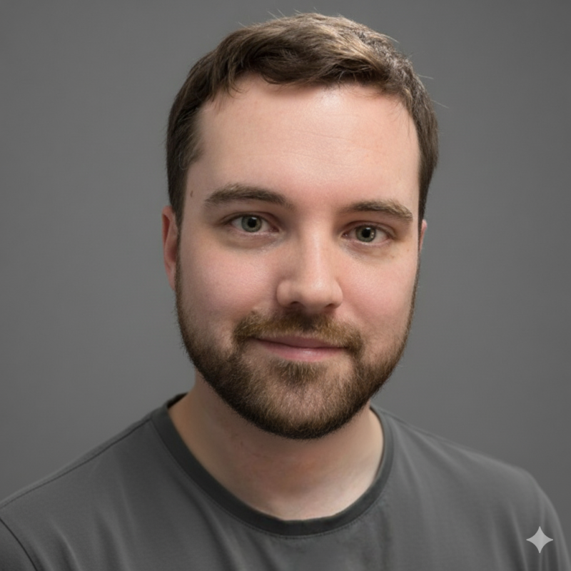

Roman Mednitzer
Vienna, AT · IT Infrastructure & Operations
Public Profile
Authoritative Profiles
- LinkedIn — https://www.linkedin.com/in/rmednitzer
- GitHub — https://github.com/rmednitzer
About
With over a decade in IT infrastructure and operations, I deliver robust computing environments built for performance, security, and continuity. I specialize in systems reliability, virtualization, storage, and data protection, ensuring infrastructures remain resilient, scalable, and aligned with organizational needs.
Contact
Email: r.mednitzer@outlook.com
Organizations
- OCG — Austrian Computer Society · Member
- IEEE — Institute of Electrical and Electronics Engineers · Member
Keywords
Reliability engineeringSREKubernetesSlurmProxmoxVMwareCephZFSTerraformAnsiblePrometheusGrafanaELK/ElasticCI/CDBackup and Disaster RecoveryHigh availabilityLoad balancingIAMDatabase replicationZero-downtime upgradesSecurity hardeningISO 27001NIS2